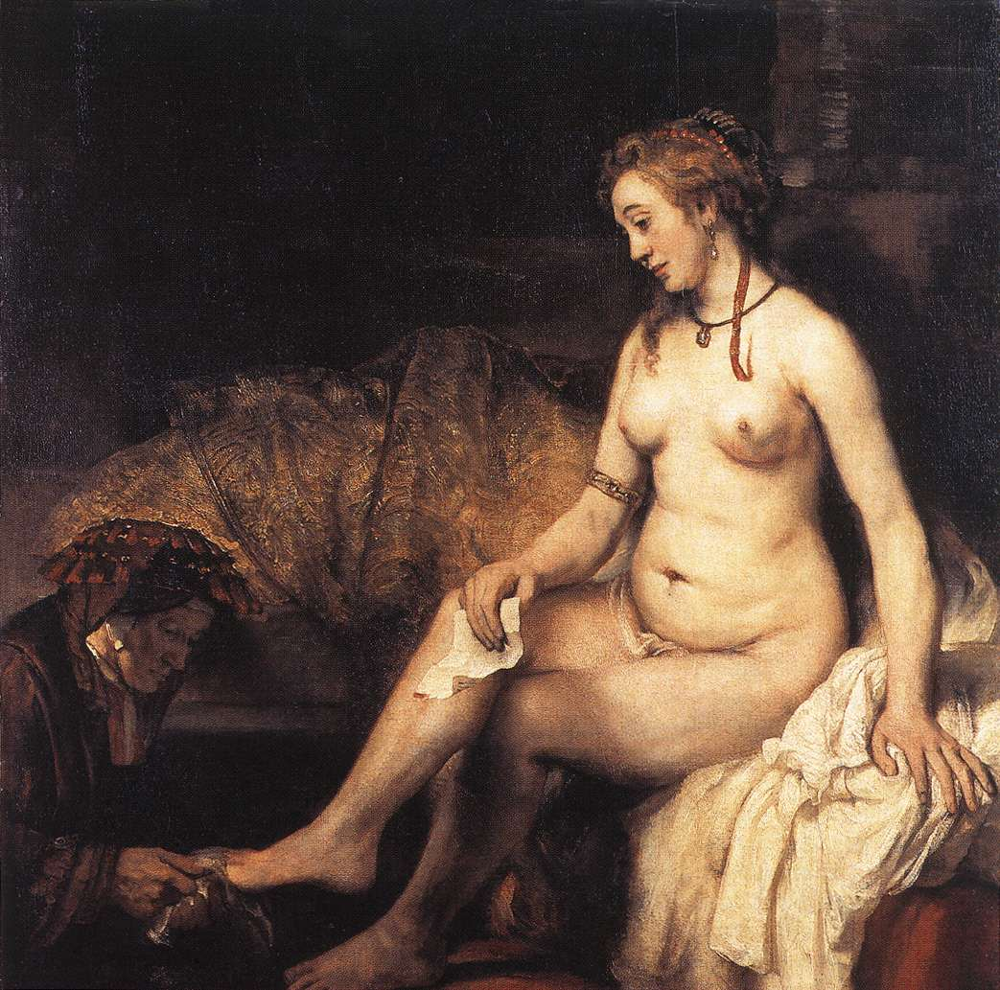
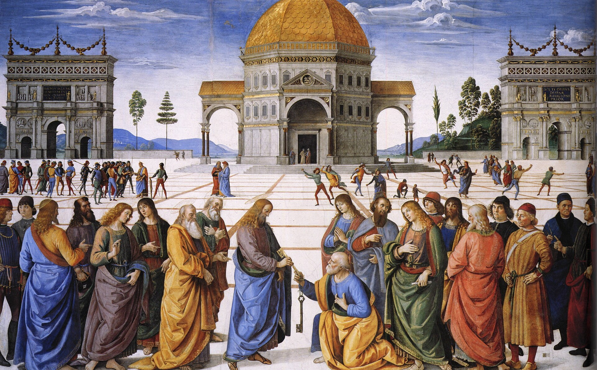
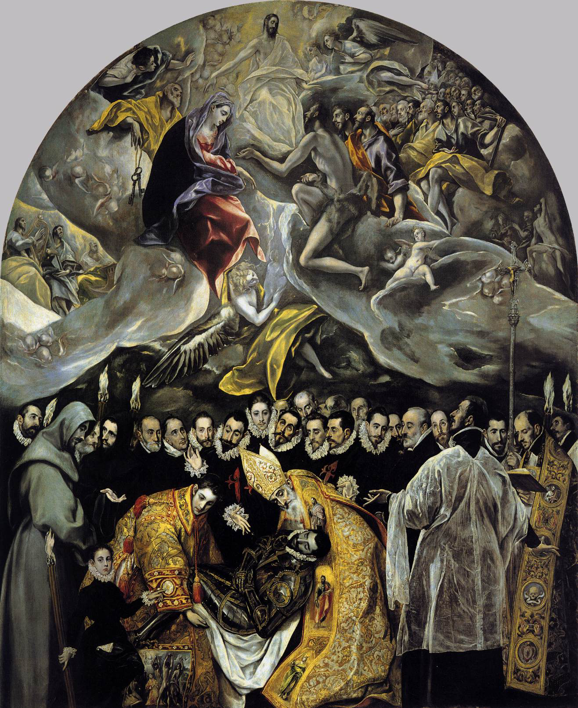
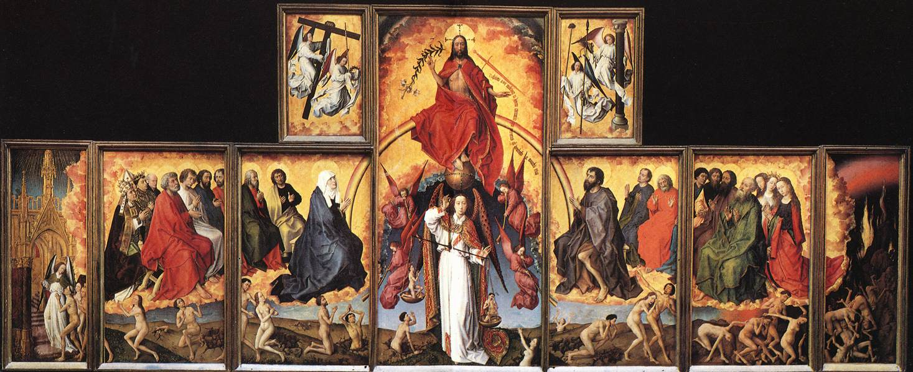

Una guía apologética para entender qué enseña realmente la Iglesia — y por qué los argumentos más comunes en su contra atacan una caricatura, no la doctrina.
Mucha gente discute contra una caricatura, no contra la doctrina real de la Iglesia. La clave está en una distinción que se pasa por alto: la indulgencia no es el perdón de la culpa. Es algo diferente y más preciso. Antes de defender o atacar algo, conviene saber con exactitud qué es ese algo.
Esta definición presupone tres verdades: que el pecado tiene culpa y consecuencias, que existe una purificación posible tras la muerte, y que la Iglesia recibió de Cristo autoridad real para atar y desatar. Sin esas bases, la doctrina parece arbitraria. Con ellas, es profundamente coherente.
Antes de explicar qué es una indulgencia, conviene barrer la caricatura. La confusión lleva siglos instalada y genera debates que, en rigor, no tocan la doctrina real.
Estas cuatro ideas son la caricatura. Son lo que la gente ataca. La Iglesia nunca enseñó ninguna de ellas.
La remisión ante Dios de la pena temporal debida por pecados cuya culpa ya fue perdonada.
Opera después del perdón, sobre las consecuencias espirituales que quedan incluso cuando la culpa ya no existe. Presupone arrepentimiento, sacramentos y conversión interior. No es magia. Es medicina.
La línea que hay que retener: la indulgencia opera sobre las consecuencias que permanecen tras el perdón, no sobre el perdón mismo. Dios perdona la culpa en la confesión. Lo que la indulgencia ayuda a saldar es otra cosa.
Para entender la doctrina hay que distinguir con precisión. La confusión entre estos tres conceptos es el origen de casi todos los malentendidos.
El pecado rompe la amistad con Dios. Esa ruptura —la culpa— se perdona en el sacramento de la confesión, mediante la absolución sacramental.
Sin arrepentimiento y confesión, no hay punto de partida para ninguna otra cosa.
Quien muere en pecado mortal sin arrepentimiento pierde a Dios para siempre. La confesión, al restaurar la gracia, libera de esa pena definitiva.
La indulgencia no actúa aquí. Aquí actúa la confesión.
Incluso tras el perdón de la culpa, quedan consecuencias: desorden en el alma, apegos desordenados, reparación pendiente. Esta pena puede purificarse en esta vida o después de la muerte.
Aquí actúa la indulgencia. Solo sobre esto. Sobre la pena que subsiste cuando la culpa ya está perdonada.

El caso más claro en la Escritura: David peca gravemente con Betsabé y manda matar a Urías. Se arrepiente. Dios lo perdona. Pero el perdón no borra todas las consecuencias.
La culpa fue perdonada. Natán lo declara explícitamente. Pero inmediatamente después, el mismo pasaje anuncia consecuencias temporales: el hijo nacido de ese pecado morirá. David es perdonado y carga con consecuencias. Ambas cosas son ciertas a la vez.
Este es el esquema exacto detrás de las indulgencias: la culpa perdonada no elimina automáticamente todas las consecuencias. El perdón restaura la amistad con Dios; la pena temporal es lo que todavía queda por reparar o purificar.
Moisés es el amigo íntimo de Dios. Hablaba con él "cara a cara". Fue elegido, guiado y sostenido por Dios a lo largo de décadas. Y sin embargo, por una sola falta en Meribá, no entra en la Tierra Prometida.
No se trata de condenación: Moisés aparece transfigurado junto a Jesús en el Tabor, señal de que está en la gloria. El pecado fue perdonado. Pero hubo una consecuencia temporal que marcó su historia concreta en esta tierra.
Los dos casos —David y Moisés— establecen el principio con claridad: el perdón de la culpa no elimina automáticamente las consecuencias temporales. Eso es el núcleo doctrinal que hace inteligibles las indulgencias.
No es el infierno. Esta persona se salva. Hay salvación real, definitiva. La gracia de Dios está presente.
Algo queda impuro, desordenado, incompleto. El fuego lo consume. Hay una pérdida, una purificación real de lo que era imperfecto.
Un proceso real entre el estado presente y la gloria plena. No es el cielo inmediato. No es el infierno. Es una purificación.
Este es el fundamento bíblico del purgatorio y, por ende, de las indulgencias: hay una purificación posible y real para quienes mueren en gracia de Dios pero todavía con imperfecciones. Si esa purificación existe, tiene todo el sentido que Dios permita que su Iglesia ayude a acortarla aplicando los méritos de Cristo.
La pregunta que subyace a toda discusión sobre las indulgencias es: ¿quién le dio a la Iglesia esa autoridad? La respuesta es la más directa posible: Cristo.


La frase "tesoro de la Iglesia" suena extraña, como si la Iglesia guardara puntos canjeables. No es eso. El tesoro es Cristo: su Pasión, su Sangre, sus méritos infinitos. Y, unidos a Él, los méritos de la Virgen y los santos.
No falta nada al sacrificio de Cristo en sí mismo —es perfecto e infinitamente suficiente. Lo que San Pablo llama "lo que falta" es la aplicación histórica, personal y eclesial de esos méritos a los miembros de su Cuerpo. Dios quiere que participemos realmente en la obra de la redención —no que la completemos, sino que la recibamos y la transmitamos.
La clave: Cristo pagó infinitamente todo. Las indulgencias no añaden mérito nuevo: aplican esos méritos infinitos al alma que los necesita, por mediación de su Iglesia.
El purgatorio no es una invención medieval. Es la respuesta más misericordiosa a una pregunta bíblica muy concreta.

El razonamiento es directo: Ap 21:27 dice que nada impuro entra en el cielo. Heb 9:27 dice que hay una sola muerte y un juicio —sin ciclos de reencarnación, sin segunda oportunidad en otra vida. Entonces la pregunta es:
No puede ir al infierno: está en gracia. No puede entrar al cielo todavía: nada impuro entra. La respuesta católica es profundamente misericordiosa: se salva, pero es purificado. Eso es el purgatorio. Y si hay purgatorio, tiene pleno sentido que la Iglesia pueda aplicar los méritos de Cristo para aliviar esa purificación. Eso son las indulgencias.
Para defender las indulgencias con honestidad hay que reconocer que hubo abusos graves. Negarlos es perder credibilidad antes de empezar.
No. Que haya malos confesores no elimina la confesión. Que haya malos sacerdotes no elimina el sacerdocio. Que haya abusos en predicar indulgencias no elimina la doctrina de las indulgencias. El abuso de una práctica no destruye la práctica. La Iglesia misma —no solo la Reforma— condenó los abusos y los reformó.
Las condiciones para ganar una indulgencia plenaria muestran mejor que cualquier argumento que no es un mecanismo mágico ni un mercado espiritual. Exigen conversión interior, sacramentos y oración.
Estar en estado de gracia; en general, haberse confesado en los veinte días anteriores o posteriores a la obra indulgenciada. Sin estado de gracia, no hay indulgencia posible. Es el primer requisito y el más fundamental.
Recibir la Eucaristía el mismo día en que se realiza la obra indulgenciada. Unión real y plena con Cristo —no meramente declarada.
Un Padre Nuestro, un Ave María y un Gloria. Expresión de comunión con el pastor universal de la Iglesia y de solicitud por el bien de todo el Cuerpo de Cristo.
Incluso del pecado venial. Es la condición más exigente y la menos comprendida. Muestra que la indulgencia no es un atajo: requiere un alma plenamente vuelta hacia Dios, sin ningún apego al mal.
Por ejemplo: visita y oración ante el Santísimo Sacramento, rezo del Rosario en familia o en iglesia, Vía Crucis, lectura piadosa de la Escritura por media hora, visita a un cementerio para orar por los difuntos en días señalados.
El que cumple estas condiciones no "compra" nada: se dispone a recibir lo que Cristo ofrece gratuitamente a través de su Iglesia. La forma en que Dios quiso aplicar su gracia requiere una respuesta libre y comprometida de nuestra parte.
Remite toda la pena temporal debida por los pecados perdonados. Requiere el cumplimiento de las cinco condiciones anteriores, incluyendo el desapego total del pecado. Solo puede obtenerse una vez al día (con algunas excepciones previstas).
Puede aplicarse a uno mismo o a las almas del purgatorio — no directamente a otra persona viva.
Remite parte de la pena temporal. Las condiciones son menos estrictas. Puede obtenerse múltiples veces al día realizando las obras señaladas.
También puede aplicarse a las almas del purgatorio. Su "medida" no se especifica con exactitud, porque Dios la aplica según su sabiduría.
Nota importante: una indulgencia no puede transferirse directamente a otra persona viva. Por los vivos se reza, se ofrece sufrimiento, se intercede. Las indulgencias, en sentido estricto, se ganan para uno mismo o se aplican a los difuntos en el purgatorio. Esto refuerza la Comunión de los Santos: quienes ya están en la gloria no se olvidan de quienes oraron por ellos.
La palabra técnica no aparece, como tampoco aparece "Trinidad" en la Escritura. Pero los principios sí están: la distinción entre culpa y pena temporal (David, Moisés), la purificación tras la muerte para los que se salvan (1 Cor 3:13-15), la autoridad de atar y desatar (Mt 16, Jn 20), la posibilidad de interceder por los difuntos (2 Mac 12:44-46). La formulación teológica articula lo que la Escritura enseña.
Exactamente: Cristo pagó todo. Las indulgencias no añaden mérito nuevo. Aplican esos méritos infinitos a quienes los necesitan, por mediación de su Iglesia. La pregunta no es si Cristo es suficiente —lo es absolutamente—; la pregunta es cómo Cristo quiso aplicar su gracia. Y quiso hacerlo mediante su Iglesia. La indulgencia no compite con la Cruz: depende totalmente de la Cruz. Sin la Cruz, no hay indulgencia.
La Iglesia no actúa por autoridad propia sino por la que Cristo le delegó explícitamente en Mt 16:19, Mt 18:18 y Jn 20:23. Preguntarle esto a la Iglesia es preguntárselo al que dijo: "Todo lo que ates en la tierra quedará atado en el cielo." Cristo no dejó una Iglesia decorativa. Dejó una Iglesia con autoridad espiritual real.
No arranques por Trento, Lutero o los protestantes. Arrancá por la experiencia humana y bíblica. El argumento cierra de adentro hacia afuera.